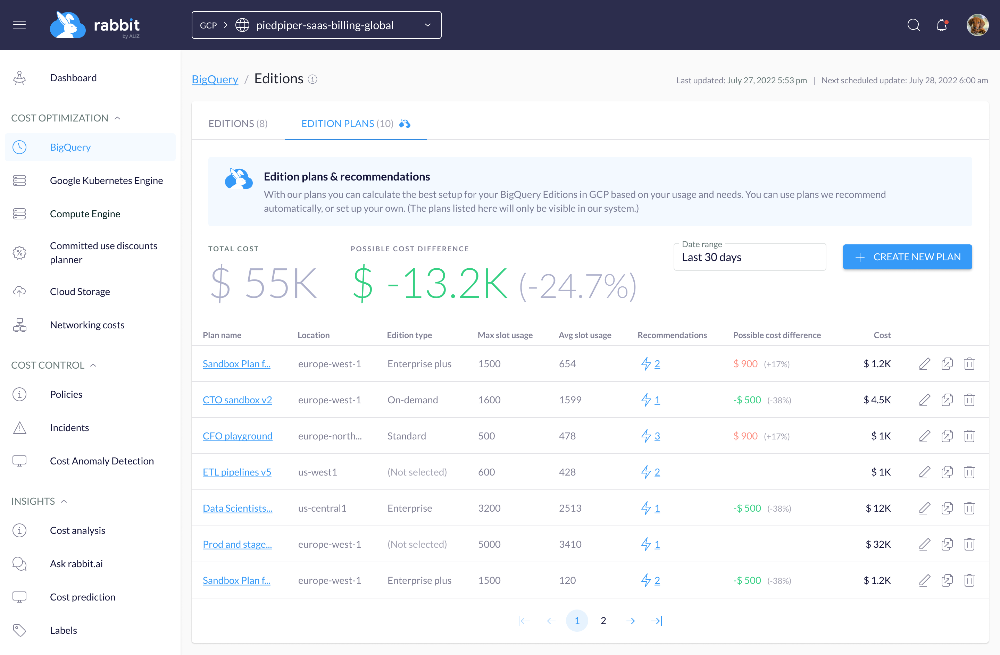

Rabbit integrates seamlessly with Google Cloud Platform (GCP) using native APIs, eliminating the need for agent installations.
Rest assured, Rabbit only analyzes metadata (no PII data access!) of your GCP services, ensuring the privacy and security of your production data.
See costs from 3 different perspectives: queries, tables, and accounts who run the queries.
You can fine-tune the table’s partitioning and clustering setting based on the column usage statistics that Rabbit provides.
Similar queries are grouped together (parameters are excluded) to see the most expensive queries. Get actionable insights and recommendations to optimize BigQuery not just for cost but for performance as well.
BigQuery Edition Calculator

With Rabbit weeks of documentation reading and custom spreadsheet creation can be eliminated:
Explore and analyze various scenarios using our BigQuery Edition Planner! In case you feel overwhelmed by the documentation and don't know where to begin, our calculator is here to guide you through the process. It ensures that you are aware of any features exclusive to specific edition packages.
Assess the most suitable pricing option based on your historical usage. You can make a decision on whether to prioritize performance or cost-effectiveness.
Google Kubernetes Engine (GKE)
Rabbit gives you a more granular cost breakdown on the cluster, namespace, workload (pod), and node pool level.
Based on the past usage of workloads Rabbit provides actionable recommendations to fine-tune the requested resources or may change the machine type of the node pools to have better utilization of nodes.
Rabbit uses pure GCP APIs to provide that information, there is no need to deploy any additional service into your production cluster.
Committed Use Discounts Planner
CUD planner helps to make commitment decisions easy and accurate.
Instead of guessing, make data-driven decisions based on historical data combined with forecast data and save 30% or more on committed usage.
CUD supports resource- and spend-based commits for Compute Engine and helps you find the best mix that fits your business needs.
Labeling cloud resources allows you to group costs and create a manageable, business-relevant break-down of your expenses.
Implementing a proper labeling strategy can be hard, therefore Rabbit helps you find unlabeled resources and provides an overview of already labeled services and resources.
You can set which projects and services are applied for each label to have a proper view.
Rabbit is designed to aid in managing cloud cost events in a timely manner, thereby minimizing any negative impact on the business, whether related to cost or otherwise. Rabbit employs a customized machine learning model to identify any deviations or spikes in costs over time. Upon detection of any anomalies, the system sends out an alert, enabling the DevOps team to take prompt action before it becomes a significant issue.
Understanding networking costs is crucial because they are often the primary source of shared cost issues, such as how to allocate them between different teams, products, and services.
The goal of Rabbit is to provide clarity and transparency regarding cloud costs, particularly those related to networking.These costs can be extremely difficult to comprehend and identify. To gain a comprehensive understanding of networking costs, Rabbit collects all available information and presents it in an organized manner that enables prompt action to be performed.